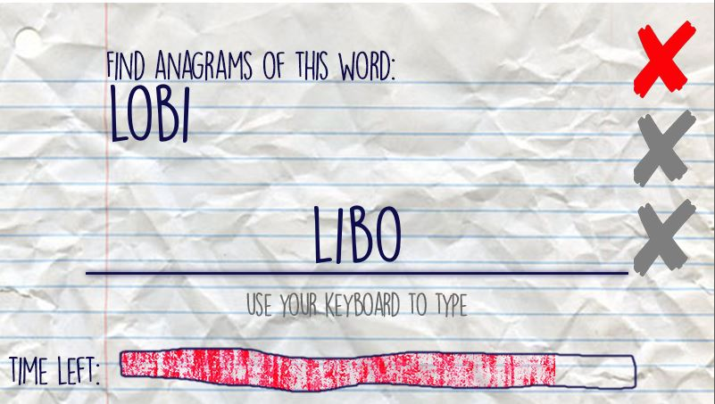
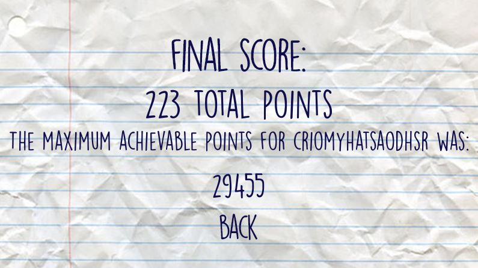

How to Play¶
Upon starting the game, you will be welcomed by the main menu screen. Here, you can choose from the two game modes: Anagram Mode and Combine Mode. You may also choose to quit the application; and you can quit the application any time in the game by clicking on the default close button of the program window.

Anagram Mode¶
In Anagram Mode, you are tasked to find anagrams of the word shown on the screen. The word and its anagrams are based off the dictionary file you used. To play, simply use your keyboard to type, and pressing Enter will confirm your answer.
Combine Mode¶
In Combine Mode, you are to find words that use letters from the letter pool below the answer line. You may only use a letter once in an answer, and you can’t repeat previously correct answers.

Ending the Game¶
Both game modes will end when the timer bar on the bottom is emptied (in 100 seconds) or when you hit three mistakes. Other than that, it is possible to end the game prematurely when you have found all possible anagrams of a word (Anagram Mode) or when you have reached the absolute maximum number of points achievable (Combine Mode).
In the score screen after the game ends, either your equivalent scrabble points or your number of words solved shows up, in Combine Mode and Anagram Mode, respectively.
